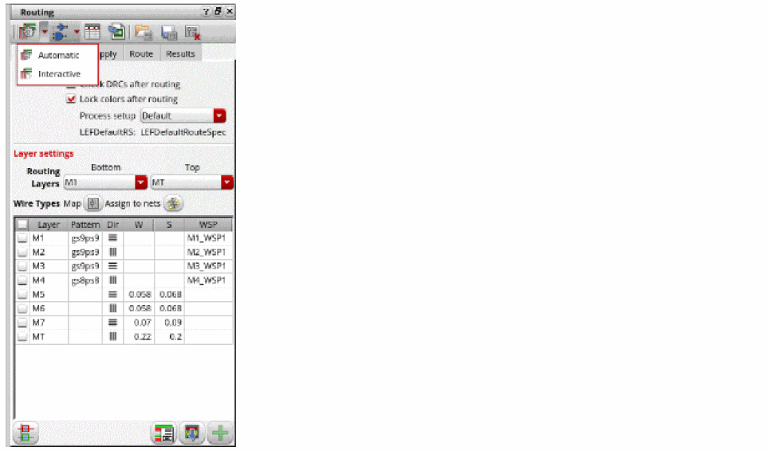
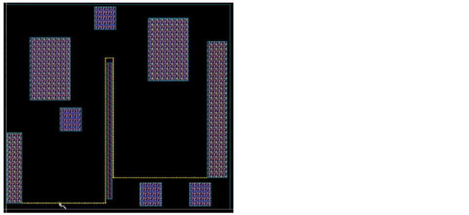
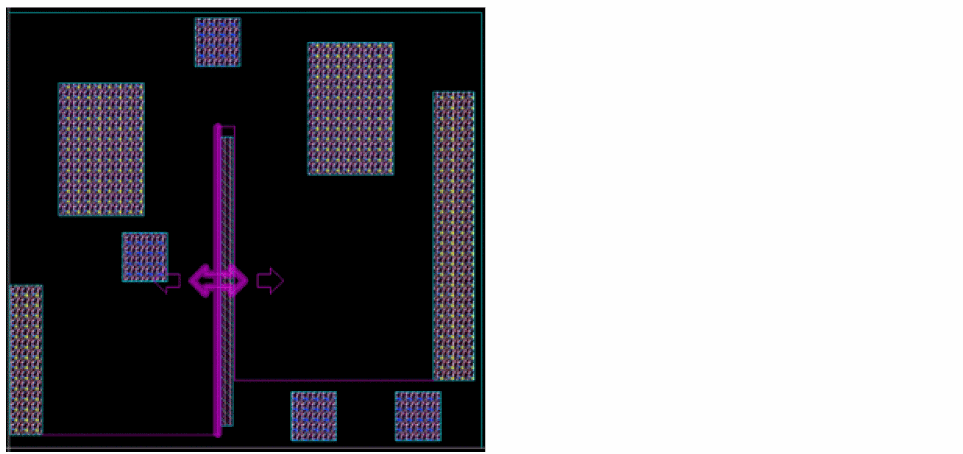
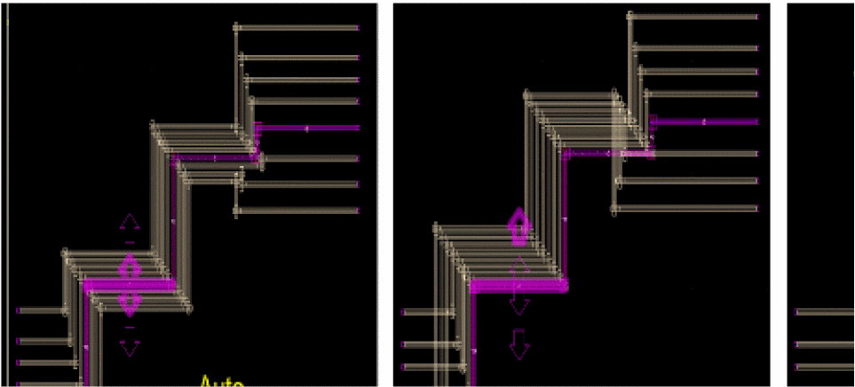
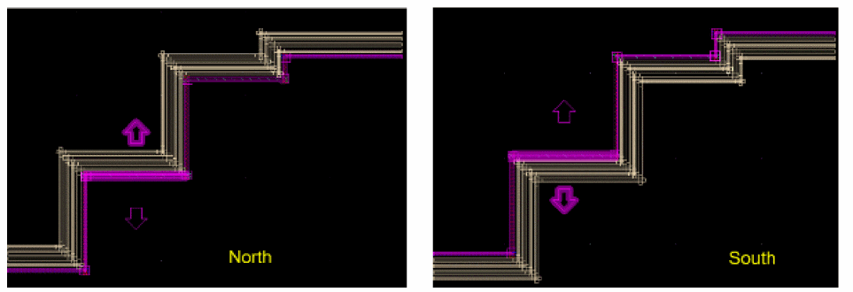
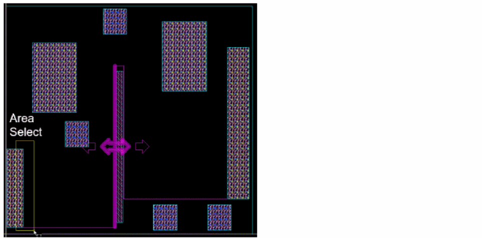
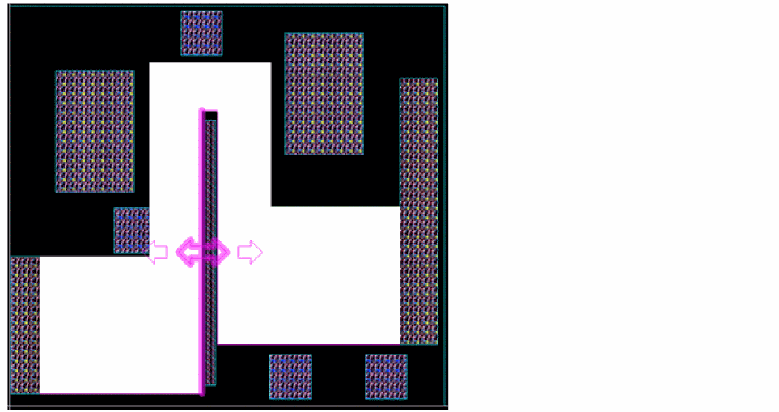
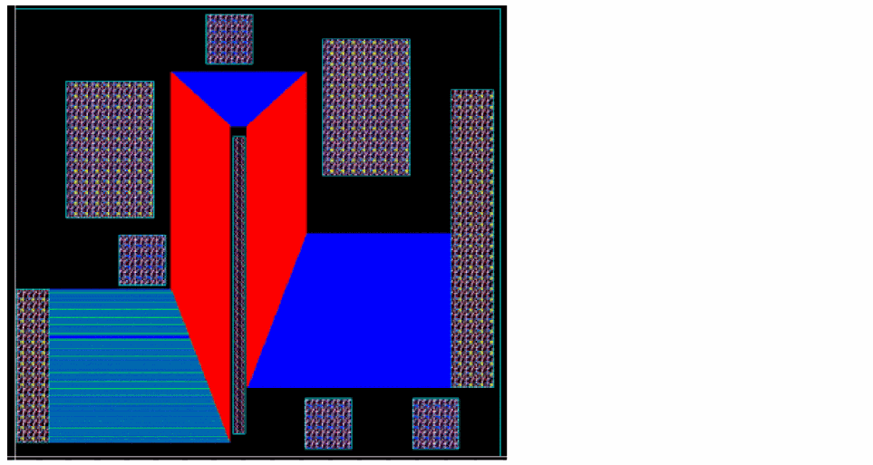

Copying Pin-to-Pin Routes
Copy Route lets you create copies from a reference wire. While creating copies, you can control the width and spacing as well as the layers for the intermediate transition of the copies. To create copies:
- Choose Windows – Assistant – Routing. The Routing assistant displays.
-
Click the Change routing mode button on the Routing assistant toolbar and select Interactive as the routing mode.
 - Click the CopyRoute tab.
- Choose Edit – Wiring – Copy Route. Alternatively, click the Start Copy Route button at the bottom of the CopyRoute tab in the Routing assistant.
-
Click to select the reference wire.
 -
Press space bar to set the reference wire. After the reference wire is set, it is highlighted in the layer color and the arrows are displayed.
If the mode is selected as Connected to pins, three arrows are displayed. These control the intermediate section and let you choose in which direction to copy the route. The first and last section must be connected to pins.
In the Space mode, two arrows are displayed. These arrows let you choose in which direction to copy the route.
 -
Click and drag the mouse pointer to area select the instance pins that are to be routed. You can use the
CtrlorShiftkeys to remove or add instance pins later.
Once the instance pins are selected, click Show preview to see a preview of how the copies are created. If Show preview is unselected, flightlines are displayed.
 - Edit your design as required to avoid any shorts that might be created.
- Choose how the target layer is determined. The available options are: Same as reference, Same as reference Except pins, Based on pins, Based on pattern.
-
Press
Enter. Alternatively, click the Run Copy Route button at the bottom of the tab.
The copy route is run and the copies are created based on the settings and options. The following figure shows how the layers used for the copies are different if you set target layers as Based on pins.

Related Topics
Variables to Customize the Settings for Copy Route
Return to top